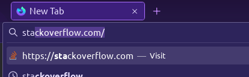

Result
Pressing Ctrl L or F6 selects the URL bar, but does not copy to clipboard (i.e. a subsequent middle-click paste will not paste the URL): 
Pressing Ctrl K selects the search bar, but does not copy to clipboard: 
If the URL bar is focused in a tab …  … and you switch from a different tab …
… and you switch from a different tab …  … to the tab which has the focused URL bar, then sometimes the URL bar is selected, but its content is not copied to clipboard:
… to the tab which has the focused URL bar, then sometimes the URL bar is selected, but its content is not copied to clipboard: 
Typing a URL auto-completes the rest, but the selection is not copied to clipboard: 